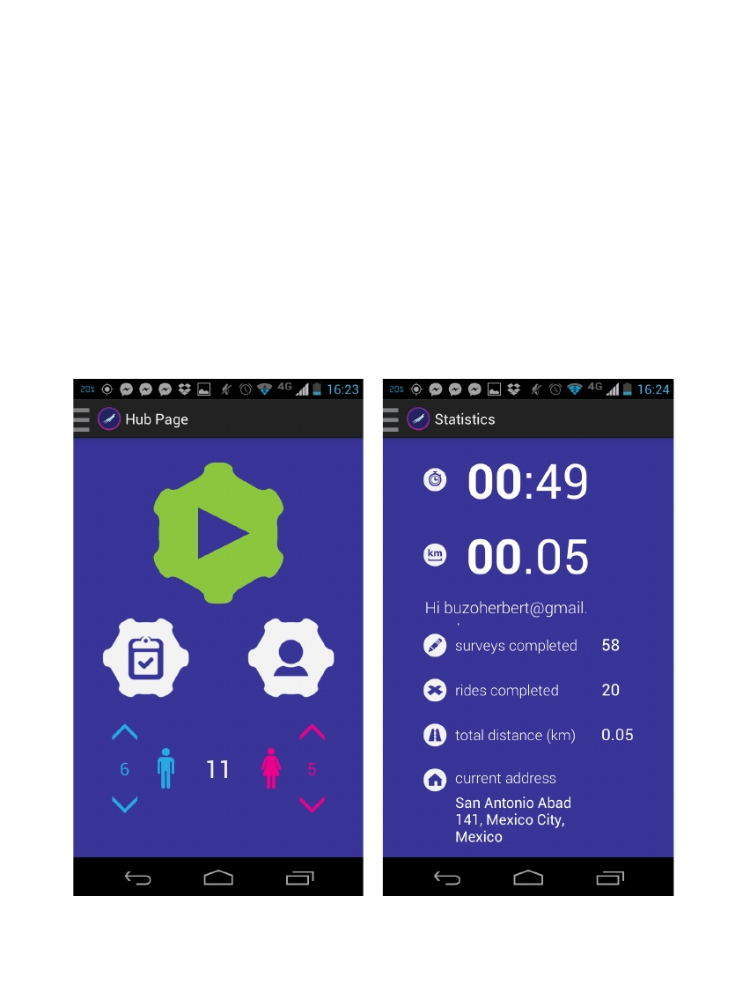

scribd. scribd. scribd.
State of Flocktracker, February 2014
Introduction
Flocktracker has evolved substantially from its original Mexico City build, back in May of 2013. From userinterface to overall functionality, the application has completely rebuilt the original design. The newsystem is far more stable, accurate, and versatile than it has ever been. To learn more and understandhow we have advanced each component of the application, please read further.
Flocktracking Concept
Flocktracking is a concept that aims to advance survey methodology, making data collection simpler,faster, and more robust. A group of well-trained volunteers, or “Flock,” are dispatched in a strategicmanner to perform surveys targeted at understanding information in a dynamic manner. That is, they aredispersed in a manner intended to capture elements that might not be measurable in a staticenvironment. For example, if one were to compare transit routes, as we did, volunteers would bedispatched on multiple buses, strategically through the day so as to capture peak and off-peak riders,and maintain a consistent presence and rotation of coverage over the linear distance of the ride.
Data Generation Technique
The application then converts this spatial coverage into a powerful, data-based, accrual of informationthat is dynamically arrayed by time and space. That is, in the current application, an individual’sgeospatial coordinates, the number of riders in the vehicle, the volume of riders distributed accordingto gender, the speed, and the time can all be combined into a packet and uploaded at 30 secondintervals, enabling a “high-resolution” mapping of the total course of the trip. Surveys are uploaded andconjoined with this point specific data, allowing for robust data sets specific to a plethora ofenvironmental factors.This application is flexible and is intended for use in a variety of formats. For example, the application iscurrently being used to perform a sociodemographic analysis on poverty and household living situationsin the south of Mexico City, as well as tested for use in counting bicyclists by type in urban areas withinthe city. More on this work can be found by visiting www.flocktracker.tumblr.com.
Structure of Report
The intent of the report will be to show what previous elements of the application were an issue, explainthat in depth, and then show how we have sought to remedy the issue with the new application. Thissection will occur after a brief overview of the current functions of the application. The next section ofthe report will be to take any remaining issue components and elaborate on how we seek to addressthese moving forward. Finally, we will include and new issues that have come up, as well as planned newfeatures and conclusions.
1 of 12
Current Application Features
The current application has 5 key components:1. Hub Page2. Counter3. Statistics Page4. Survey Compositor5. SurveyThe hub page is simply that. The page acts as a central screen which bridges to the other componentsof the application. Currently, the counter, which enabled riders to count the number of persons in thevehicle by gender, and add or reduce the number given live boardings, is placed on the bottom of thehub page This could change, moving forward. Particularly, as we engage test users of the application,we can begin to see what unique case uses occur and use those case uses to begin to inform variouspotential reconfiguration options for the user interface.
2 of 12

Above Left: Screenshot of the current application’s hub page. Above Right: Statistics page screenshot. As can beseen from the screenshot, there is still a slight formatting issue with the name.
The hub page is versatile and performs a number of functions. An image of the screen is located, forreference, below. The trip start button is located prominently as a large, green gear. The survey linkbutton is the white gear on the right with the pencil icon, and the statistics link button is the gear on theright, with the head icon. Tapping either of these options shifts you to the their correspondingapplication functions. The male and female ridership counter is present along the bottom half of theavailable screen space and arrows up and down allow dynamic addition and removal of riders in the bus.The third component of the application is the statistics page. This page includes various aspects of therider, from current ride time, current distance travelled, surveys completed on the phone, rides or tripscompleted on the phone, total distance ridden on the phone, and the present address (using locationsharing with the GPS function within Android).The fourth component of the application is the survey compositor. This is provided upon starting up theapplication and pulls a JSON file by finding its title in the central Fusion Tables document. It takes thatassociated JSON file (the user only has to type in its name, “Research_Project,” for example) andreconfigured the application according to the parsed JSON file. This enables the same application to beused for multiple survey initiatives, thus reducing the difficulty for syncing the application on thevolunteer’s end.The survey itself is the product of this configuration effort and is accessed either from the hub screenor the sidebar menu. Components and types of survey questions possible will be explained further, later.
User Interface
The new User Interface is based in Google’s Android UX guidelines, which makes the navigation aroundthe app intuitive for users with experience using Android OS. It implements the Navigation Drawer as theprincipal navigation aid to move around the main functions of the app and around the chapters of thesurvey.All the functions were placed with a user with little to none experience in AVL system controlling or evenlacking Android general knowledge besides making phone calls. There are various elements for ensuringthat users can reach their goals with the app, such as dialogs for informing users about the nonreversible nature of the survey uploads and the tracking process to avoid accidental uploads or stopsof tracking and checks to see if the Android device where the app is running has GPS and locationservices turned on, prompting the user to the settings menu to turn it on, so the app uploads data withcorrect geotagging.
3 of 12
Above: Navigation Drawer open showing shorcuts to the Hub Page and survey Chapters.
Completed Development Goals on Base Application Model
The next list covers the features that were on the last document we produced to set goals for thedevelopment of the application. These goals were designed in September of 2013.1.Improving survey question-type optionsa.open questionsb.multiple-choice, list-based questionsc.multiple-choice questions with an “other” open optiond.multiple-choice questions with autocompletee.forked questionsf. jump questionsg.check box questions2.A “smart” forking systema.fork surveys based on the answer of a particular questionb.enable navigation options to be contextually sensitive to forking answers3.Text autocomplete4.Improve adaptability for different screen sizes and resolutions5.Inclusion of elevation with the latitude and longitude data6.Overall improvement on efficiency and reliability of the app.7.A cache systema.stabilize data upload methodologyb.enable data procurement without constant data servicec.enable delayed data upload for large data sets
4 of 12
|